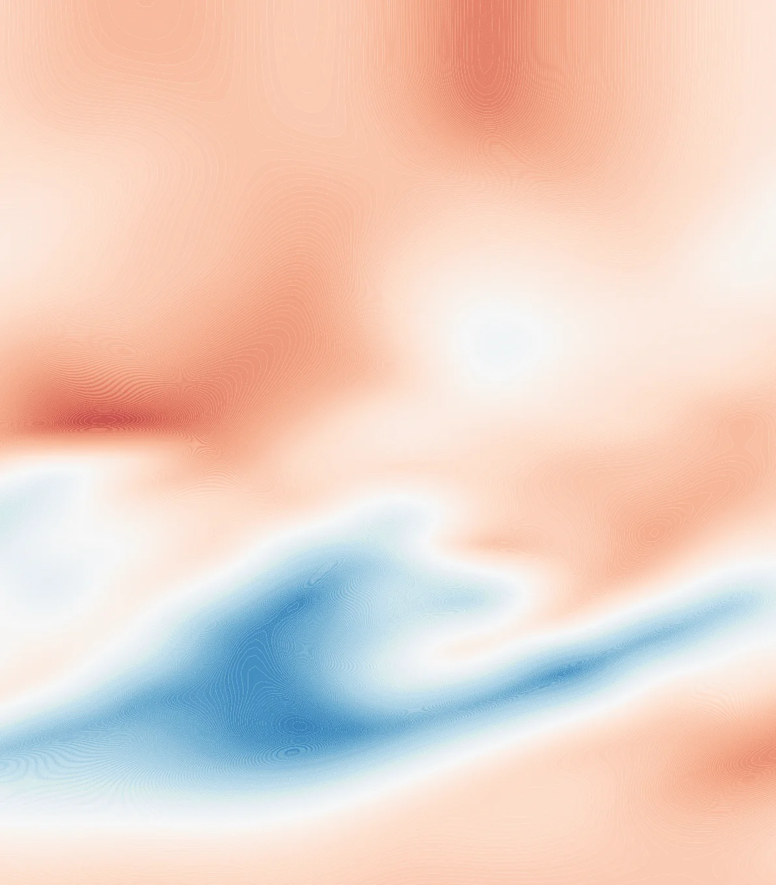
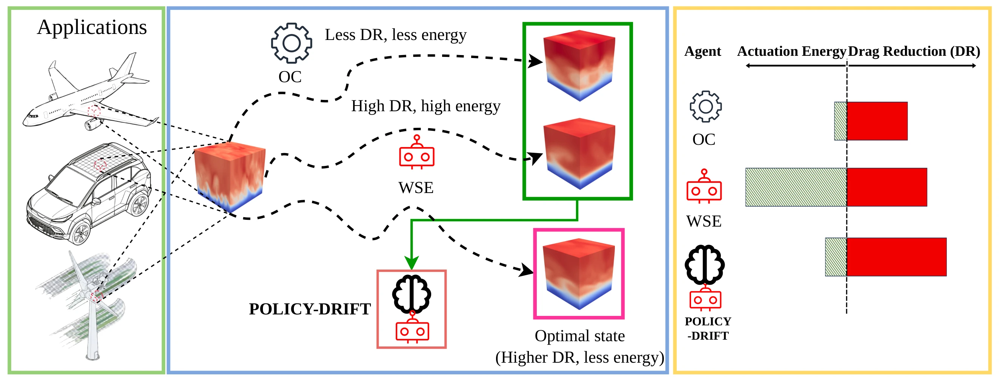
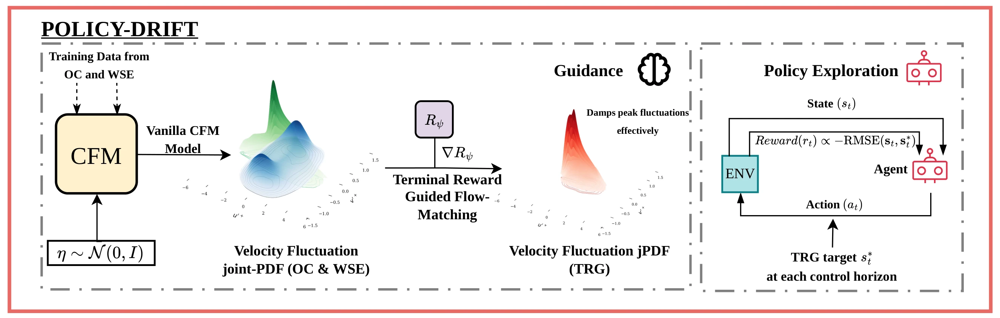
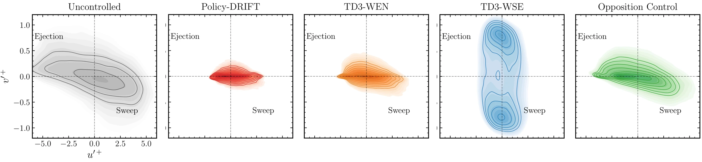

NeurIPS 2026
Policy-DRIFTDynamic Reward-Informed Flow Trajectory Steering
A generative model of turbulent flow, steered by reward at inference, gives a DRL policy targets to track for skin-friction drag reduction.

Reward design and the DRL ceiling
Skin-friction drag accounts for roughly half of the total aerodynamic drag on commercial aircraft. DRL is the leading approach for real-time flow control, but a scalar reward is a proxy for what optimal control looks like, and the proxy limits the policy.
Policy-DRIFT moves reward information from policy gradients to generative model inference. When the control objective changes, the CFM model needs no retraining and only the reward predictor is updated.


Policy-DRIFT in 3 steps
Conditional flow matching
One conditional flow matching model learns uncontrolled, opposition-controlled and DRL-controlled DNS from 7,350 snapshot pairs per regime, with no regime labels.
Terminal Reward Guidance
Terminal Reward Guidance moves ODE trajectories toward terminal states that maximise DR − Eact, using the gradient of a learned reward predictor.
Tracking policy
A TD3 policy minimises RMSE to the guided target over each 8-step horizon. Once deployed it senses one wall-parallel plane and queries no generative model.


Terminal Reward Guidance
TRG corrects each ODE state before the velocity step, and the velocity model then maps the nudged state back toward the physical flow manifold. Applying the same correction after the step causes reward hacking: drag reduction clamps at 1.0 within the first few guidance steps, on physically unrealisable states.
On held-out uncontrolled snapshots, guided rollouts raise drag reduction by ΔDR ≈ 0.026 to 0.030 at comparably low actuation energy. The perturbation is two orders of magnitude smaller than the velocity fluctuations.
ũs+ = ũs + γ δs ∇Rψ(ũs, s)
ũs+δs = ũs+ + δs · vθ(ũs+, s, u0)


Closed-loop results in Table 1
Policy-DRIFT reaches 48.95% drag reduction, 16.2% higher than TD3-WSE with ~37× less actuation energy, and 38.9% higher than opposition control at comparable energy. The policy optimises neither quantity directly.
| Method | DR (%) | Eact (×10−1) | R̄ |
|---|---|---|---|
| Training benchmarks | |||
| Opp-Control | 35.23 ± 10.09 | 0.0685 ± 0.0241 | 0.345 |
| TD3-WSE | 42.13 ± 12.71 | 3.692 ± 0.0431 | 0.052 |
| Experiments | |||
| Policy-DRIFT | 48.95 ± 11.70 | 0.0990 ± 0.0711 | 0.480 |
| TD3-WEN | 42.86 ± 11.77 | 0.0609 ± 0.0406 | 0.423 |
| TD3-WSE | 42.13 ± 12.71 | 3.692 ± 0.0431 | 0.052 |
| SAC-WSE | 32.31 ± 2.33 | 0.1193 ± 0.0228 | 0.311 |

Joint PDFs at the sensing plane
At y+ ≈ 15, the ejection and sweep tails of the uncontrolled flow show how each controller acts on the near-wall cycle. TD3-WSE suppresses these tails with a bimodal v′+ reaching ±1, a sign of over-actuation.
TD3-WEN recovers a compact v′+ and weakens the suppression. Policy-DRIFT has the most compact distribution, with the strongest attenuation of both quadrants.


Code, checkpoints and citation
The repository holds the trained CFM model, reward predictor and DRL policies, with DNS restart files and sample snapshots.
# Install (Python 3.11)
conda create -n policy-drift -c conda-forge \
python=3.11 dedalus=2.2207.3 mpi4py=3.1.4
conda activate policy-drift
pip install -r requirements.txt
pip install -e .
# Two epochs of CFM and reward-predictor training cd flow_matching_trg python train_cfm.py --dummy python train_trg.py --dummy # Two 20-action episodes of Policy-DRIFT cd ../drl_pipeline python train.py --reward trg --dummy
@article{mahajan2026policydrift,
title = {Policy-{DRIFT}: Dynamic Reward-Informed Flow Trajectory Steering},
author = {Mahajan, Atharva and Vishwasrao, Abhijeet and Wang, Yuning and Vinuesa, Ricardo},
journal = {arXiv preprint arXiv:2605.14022},
year = {2026}
}